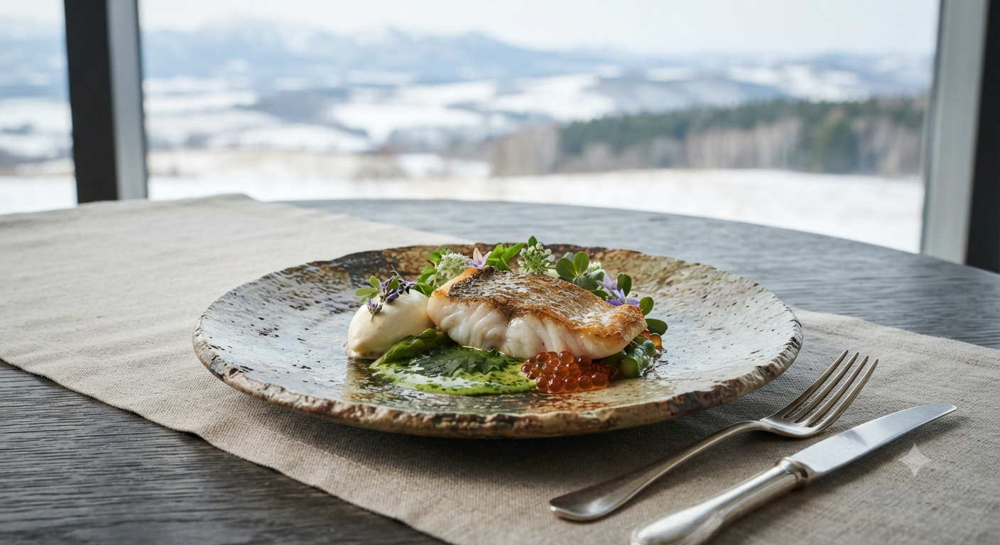
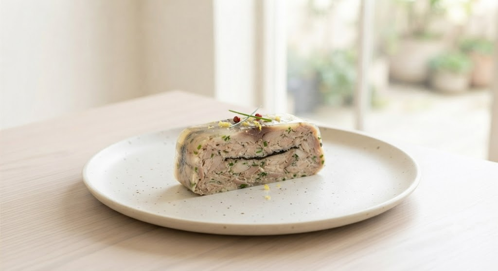
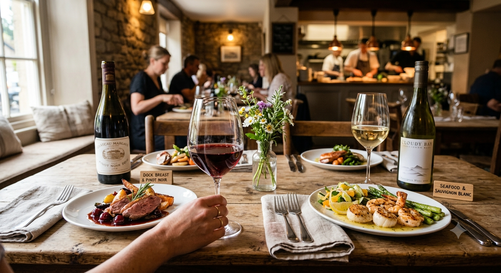
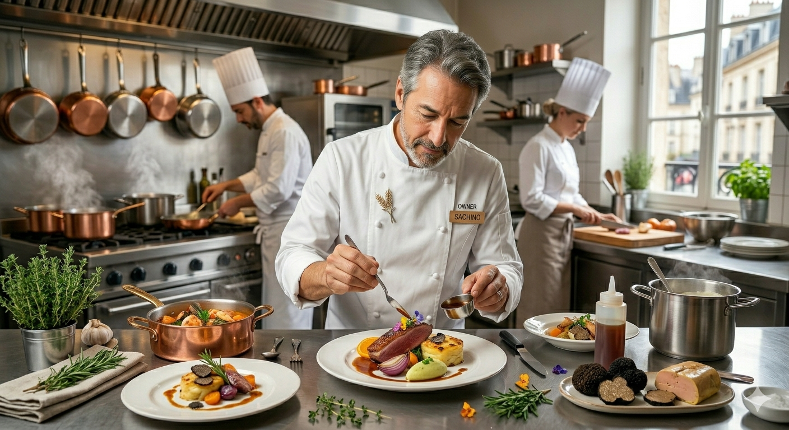

Osteria Crocchio Sapporo
ご予約・お問い合わせ
011-207-3522

「オステリア」とは、イタリア語で居酒屋を意味します。肩肘張らずに、しかし供される一皿はどこまでも妥協なく。
札幌の人気店として愛され続け、食べログ3.60、250件以上の口コミに裏打ちされた実力。私たちが大切にしているのは、新鮮な魚介と地元食材が織りなす「その瞬間、一番美味しいもの」をお届けすることです。
当店の代名詞ともいえる逸品。新鮮なサバを贅沢に使用し、濃厚な旨味を閉じ込めたテリーヌは、一口でその「違い」を実感いただけます。ワインとの最高のマリアージュをお楽しみください。


「いつも混んでいて外から入店したいと思っていました。たまたま入店できた日は最高に幸せな時間。次は必ず予約して行きます。」
— 札幌市 A様
「お酒に合うボリュームと賑やかな雰囲気。素材の旨味と風味がバランスよく、リーズナブルなのが嬉しいですね。」
— グルメ通 B様
「お料理が素晴らしく美味しく、おもてなしが細やか。既にご存知の方が多い有名店ですが、末永く通いたいです。」
— 観光客 C様
オーナーシェフ・児嶋加奈子氏を中心に、スタッフ全員が女性。手作りの温もりが宿る店内には、細やかな気配りと活気が満ちています。
「二軒目使いはもったいない」と言われるほどの充実したメニュー構成。コースは7,000円から、お好みに合わせてお楽しみいただけます。

クロッキオをご愛顧いただくお客様へ。さらに快適で特別な時間をお届けするため、ただいま新しいサービスを準備中です。
「一人でも色々な料理を楽しみたい」というお声にお応えし、名物サバのテリーヌ（ハーフ）、前菜盛り合わせ、お好きなパスタをハーフポーションで楽しめる特別セットを新設します。
遅めの時間帯でもゆったりとお酒と軽食をお楽しみいただける、ソムリエ厳選のワインペアリングとアンティパストの夜限定特別プランです。
新サービスのリリース日程やご予約開始日は、公式Instagramにて優先的にお知らせいたします。
※地下鉄「すすきの駅」より徒歩圏内。資生館小学校前駅が最寄りとなります。
人気店のため、お早めのご予約をお勧めいたします。
011-207-3522